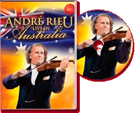

|
Live In Australia (2008) - 128 Minutes
|
 |
|
ANDRE Rieu came, saw and conquered the
hearts of Melbourne He has made history. His concert at
Melbourne's Telstra Dome on Saturday, 15 November, a
record audience of 38,605, made it the biggest
attendance of any Rieu show anywhere in the world. That
it happened in Australia, the country that has so taken
him to heart, pleases him endlessly. "It was an
overwhelming experience. The warmth of the audience was
overpowering." A giant, life-size reproduction of
Vienna's cream and orange Schonbrunn Castle dominated
the eastern end of the Dome. Giant candelabras flickered
over the heads of Rieu and his Johann Strauss orchestra
and chorus. André Rieu billed his show as "a romantic
Viennese night" and it was all of this and more. Dancers
twirled on two 600m ice rinks and from palace balconies
and in a ballroom scene. Fountains cascaded and splashed
around classical sculptures on either end of the huge
stage.
|
Where to buy?
|
|
DVD Tracklist
- Seventy-six Trombones
- Blaze Away
- Fächerpolonaise
- Roses From The South
- Chianti Song
- Nessun Dorma
- Elyen A Magyar!
- Sportpalast Waltz (Wiener Praterleben)
- Oh Mio Babbino Caro
- The White Horse Inn
- Emperor Waltz
- Concerto Pour Une Voix
- Wishing You Were Somehow Here Again
- Botany Bay
- On The Beautiful Blue Danube
- Trumpet Voluntary
- I Belong To Me
- Boléro
- Radetzky March
- Strauß & Co.
- Advance Australia Fair
- Australia Medley
- Scotland The Brave
- Amazing Grace
- Adieu, Mein Kleiner Gardeoffizier
- Marina
- Waltzing Matilda
- Along The Road To Gundagai
|
|